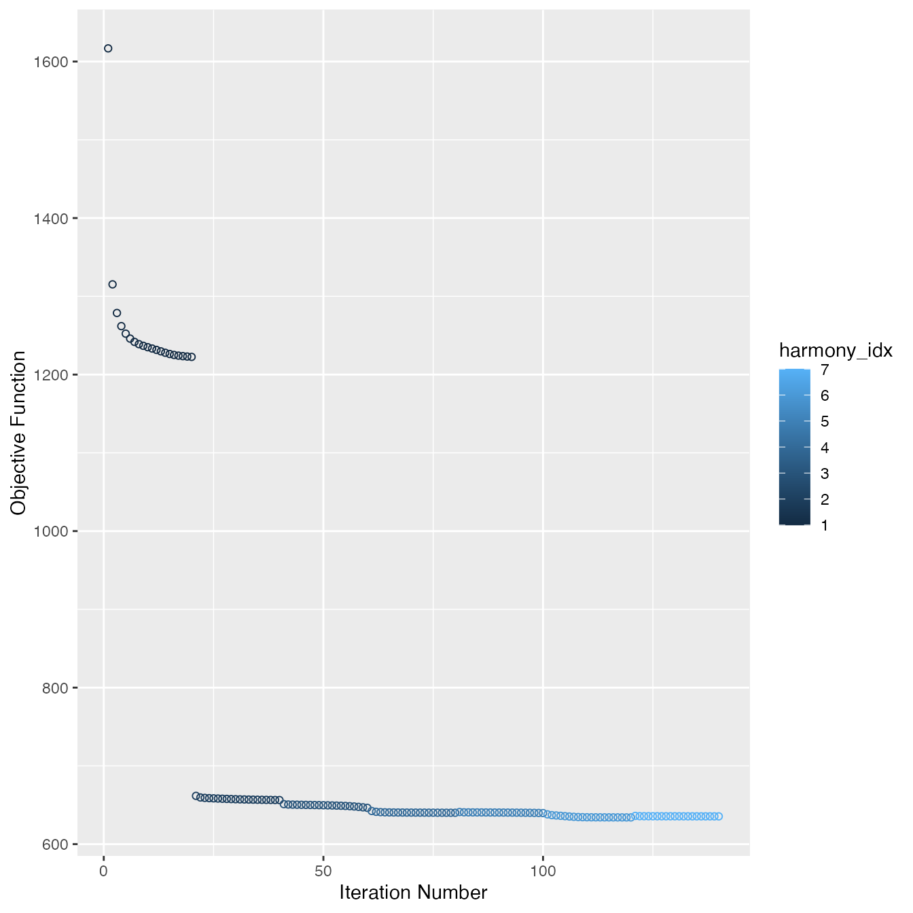
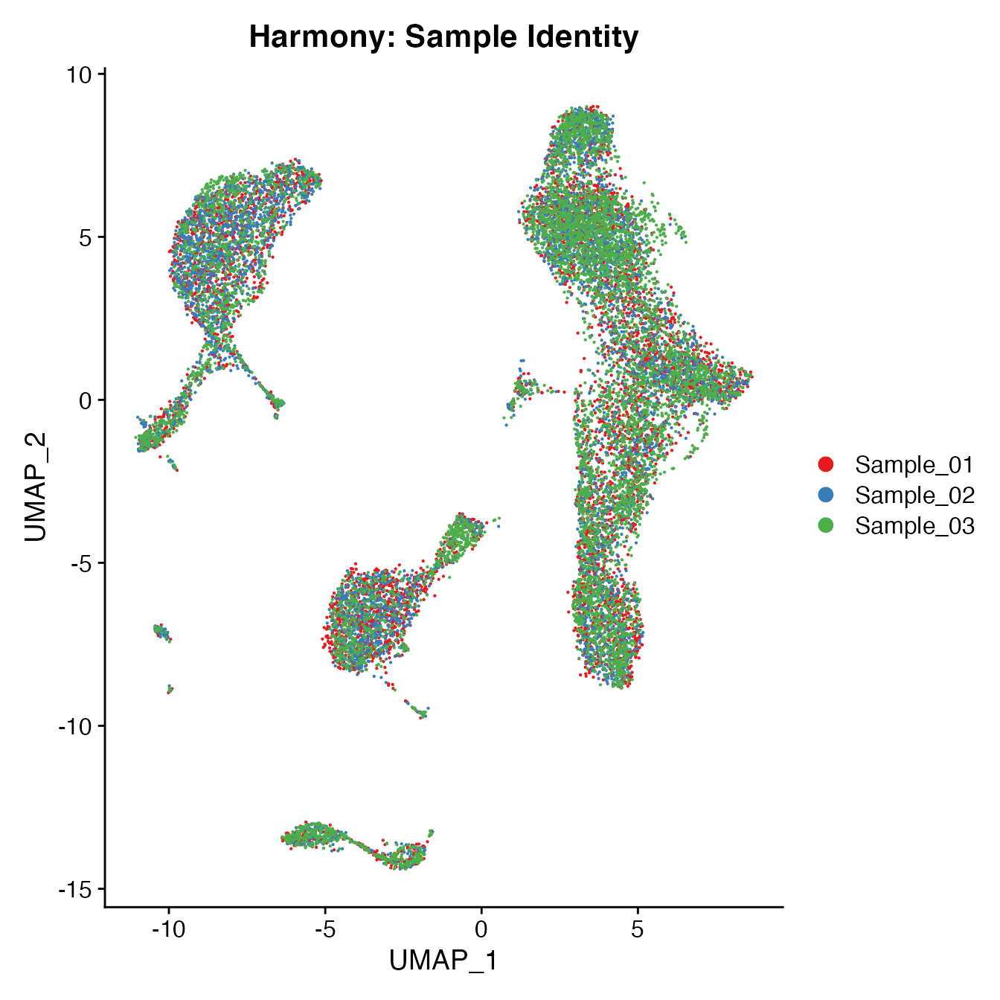
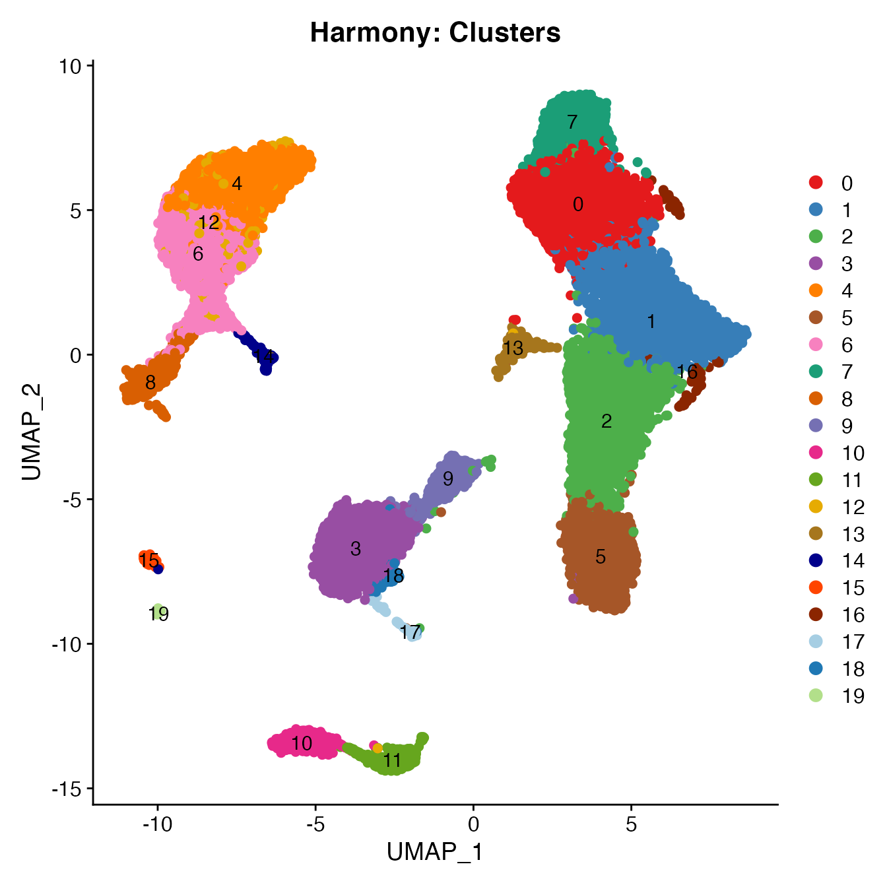
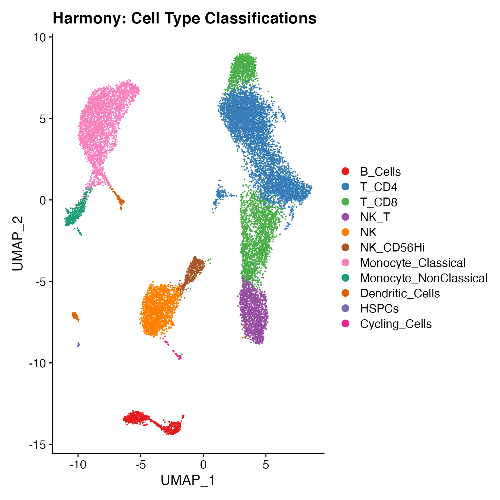
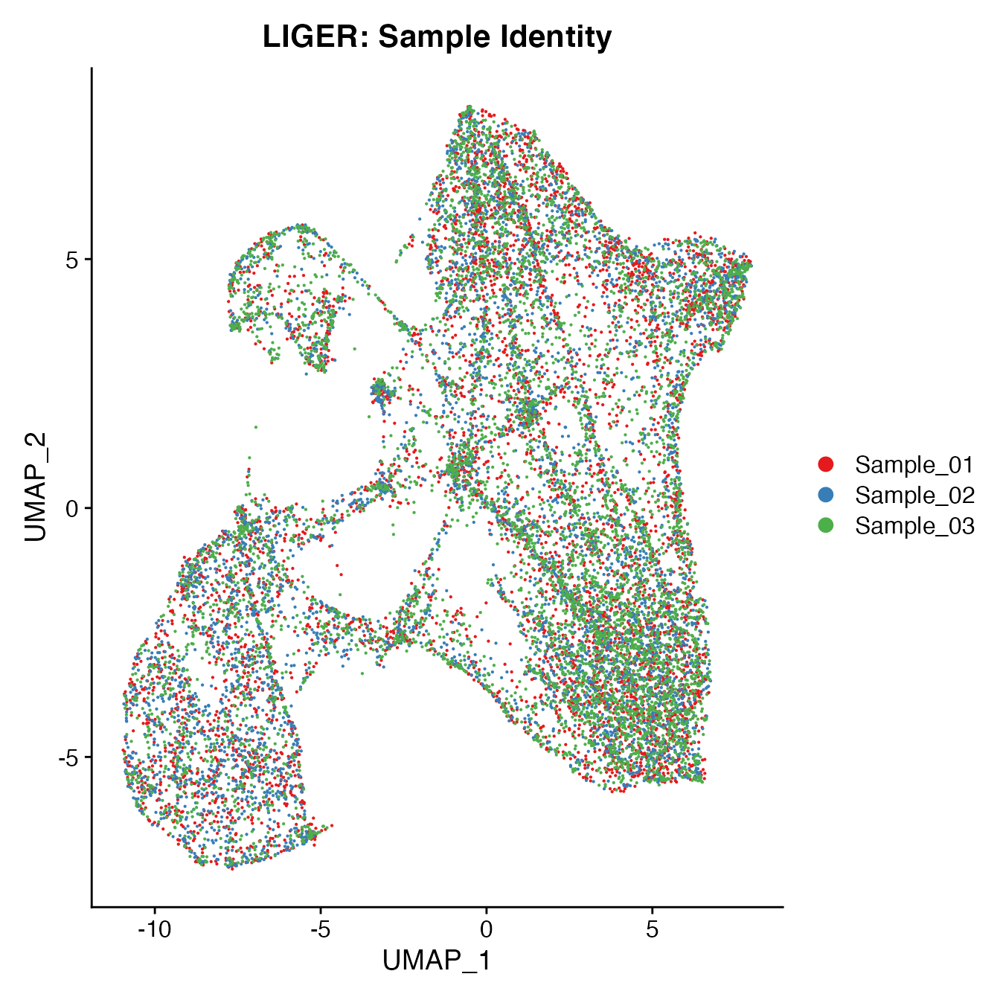
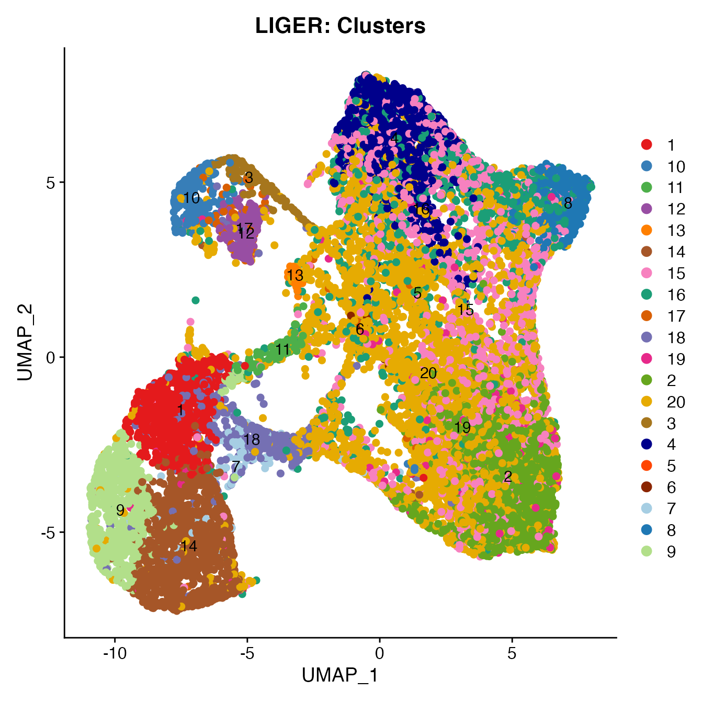
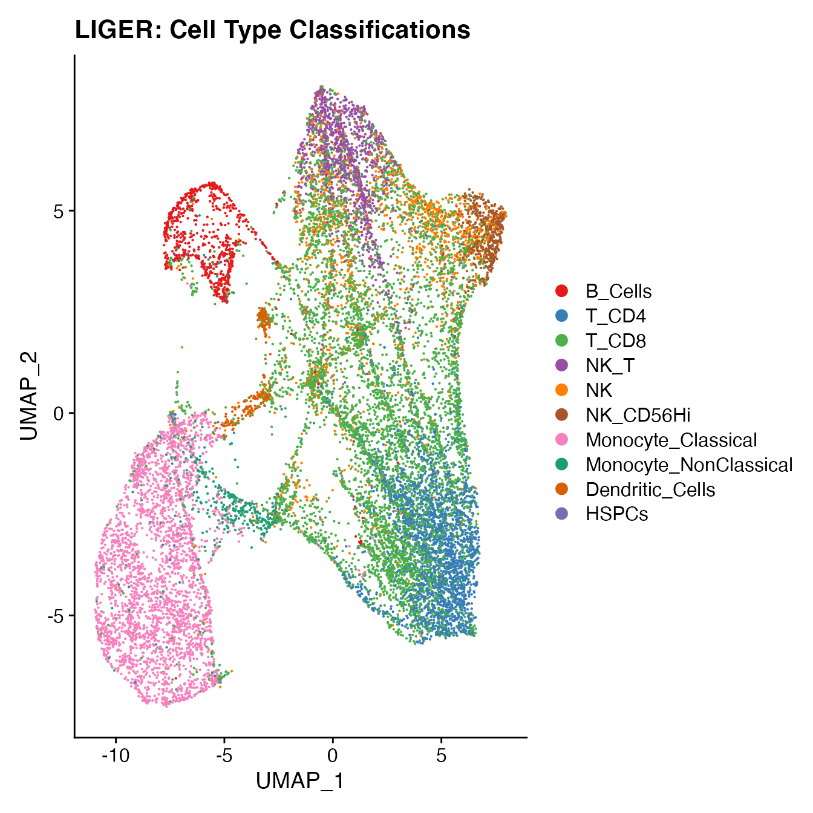
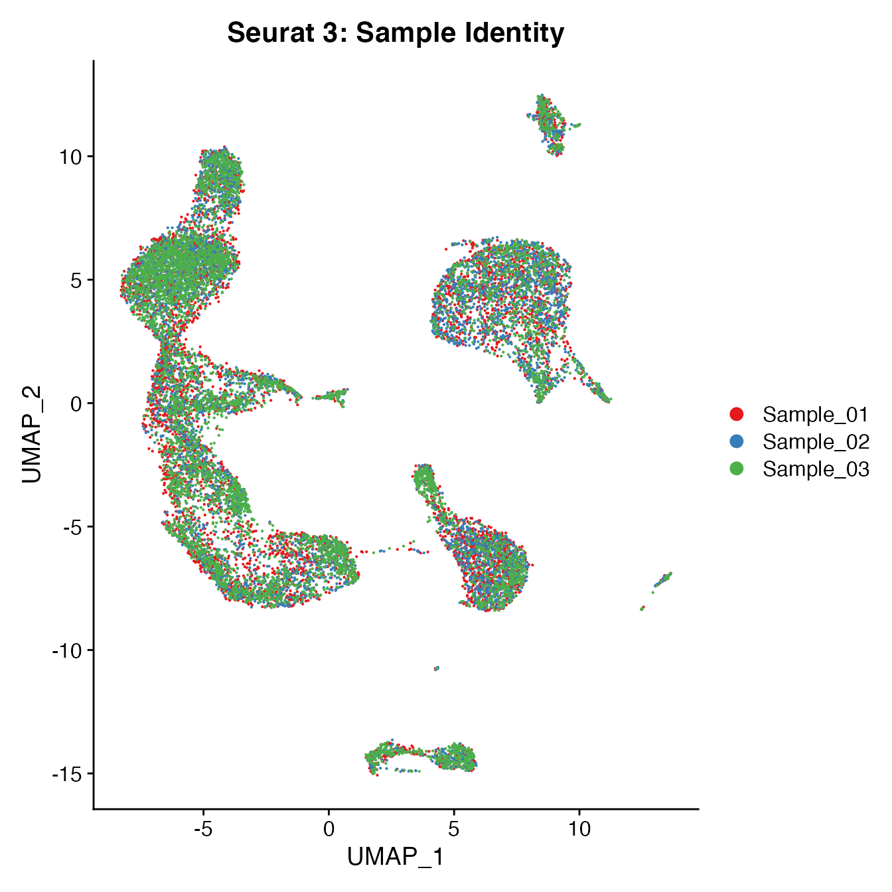
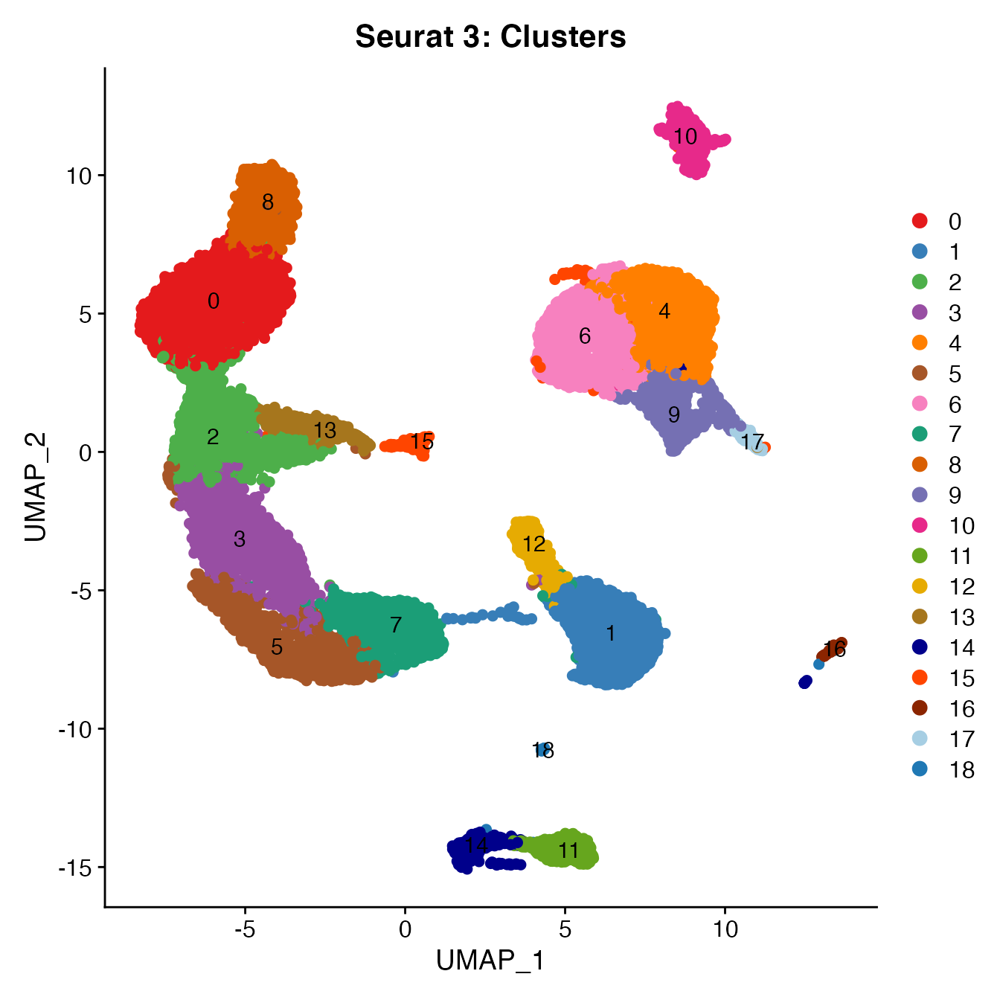
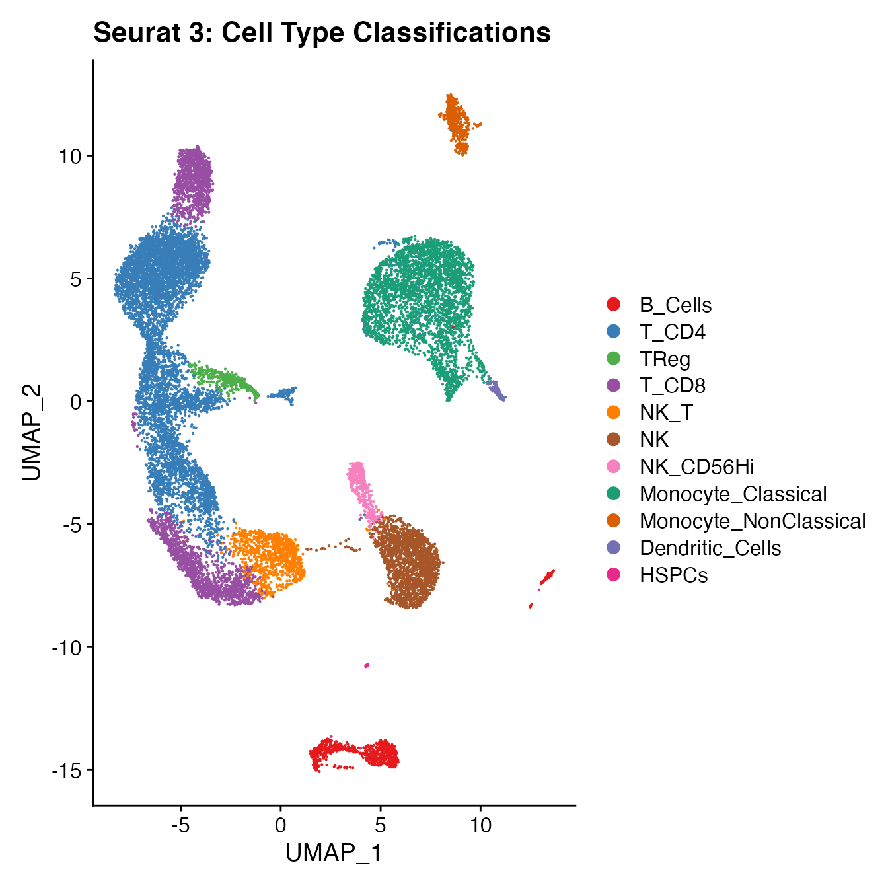

BatchEffect_Correction.Rmd
library(BatchNorm)
library(harmony)
# Import unfiltered Seurat object (included with 'BatchNorm' package)
data(PBMCs)
# Run "standard" Seurat + Harmony workflow:
## "htmlpreview.github.io/?https://github.com/immunogenomics/harmony/blob/master/docs/SeuratV3.html"
# Including filtering by mitochondrial percentage (+5 SD)
# Including data normalization, variable gene selection and gene scaling (performed on all samples together)
PBMCs <- PBMCs %>%
MitoFilter() %>%
NormalizeData(normalization.method = "LogNormalize", assay = "RNA", scale.factor = 10000) %>%
NormalizeData(verbose = FALSE, assay = "ADT", normalization.method = "CLR") %>%
FindVariableFeatures(selection.method = "vst", nfeatures = 2000) %>%
ScaleData() %>%
RunPCA(npcs = 30) %>%
RunHarmony("orig.ident", plot_convergence = TRUE)
## Generating a UMAP and clusters
PBMCs <- PBMCs %>%
RunUMAP(reduction = "harmony", dims = 1:14) %>%
FindNeighbors(reduction = "harmony", dims = 1:14) %>%
FindClusters(resolution = .8)## Modularity Optimizer version 1.3.0 by Ludo Waltman and Nees Jan van Eck
##
## Number of nodes: 16946
## Number of edges: 588809
##
## Running Louvain algorithm...
## Maximum modularity in 10 random starts: 0.8822
## Number of communities: 20
## Elapsed time: 2 seconds
UMAPPlot(PBMCs, cols = colors.use, group.by = "orig.ident") + ggtitle("Harmony: Sample Identity")
GetiLISI(object = PBMCs, nSamples = 3)## [1] 0.1828125
# For complete cell classification workflow see our vignette "Biaxial Gating of a Single Sample"
# More details can be found in figure S3 of our manuscript "Data Matrix Normalization and Merging Strategies Minimize Batch-specific Systemic Variation in scRNA-Seq Data."
UMAPPlot(PBMCs, cols = colors.use, pt.size = 2,
group.by = "seurat_clusters", label = T) + ggtitle("Harmony: Clusters")
# B_Cells = 10, 11
# T_CD4 = 0, 1, 13, 16
# No TReg cluster (contained within cluster 1)
# T_CD8 = 7, 2
# NK_T = 5
# NK = 3, 18
# NKCD56Hi = 9
# Monocyte_Classical = 4, 6, 12
# Monocyte_NonClassical = 8
# Dendritic_Cells = 14, 15
# HSPCs = 19
# Cycling_Cells = 17
Idents(PBMCs) <- PBMCs[["seurat_clusters"]]
Idents(PBMCs) <- plyr::mapvalues(Idents(PBMCs), from = c(10, 11, 0, 1, 13, 16,
7, 2, 5, 3, 18, 9,
4, 6, 12,
8, 14, 15,
19, 17),
to = c('B_Cells', 'B_Cells', 'T_CD4', 'T_CD4', 'T_CD4', 'T_CD4',
'T_CD8', 'T_CD8', 'NK_T', 'NK', "NK", "NK_CD56Hi",
'Monocyte_Classical', 'Monocyte_Classical', 'Monocyte_Classical',
'Monocyte_NonClassical', 'Dendritic_Cells', 'Dendritic_Cells',
'HSPCs', 'Cycling_Cells'))
Idents(PBMCs) <- factor(Idents(PBMCs),
levels = c("B_Cells", "T_CD4", "TReg",
"T_CD8", "NK_T", "NK", "NK_CD56Hi",
"Monocyte_Classical", "Monocyte_NonClassical",
"Dendritic_Cells", "HSPCs", "Cycling_Cells"))
PBMCs[["Cell_Type"]] <- Idents(PBMCs)
UMAPPlot(PBMCs, cols = colors.use, label = F) + ggtitle("Harmony: Cell Type Classifications")
# PBMC Sample 1
data(PBMC1_Single_ID)
S1cms <- GetCMS(object = PBMCs,
sample.ID = "Sample_01",
reference.ID = PBMC1_Single_ID)
# PBMC Sample 2
data(PBMC2_Single_ID)
S2cms <- GetCMS(object = PBMCs,
sample.ID = "Sample_02",
reference.ID = PBMC2_Single_ID)
# PBMC Sample 3
data(PBMC3_Single_ID)
S3cms <- GetCMS(object = PBMCs,
sample.ID = "Sample_03",
reference.ID = PBMC3_Single_ID)
# Average CMS
mean(c(S1cms, S2cms, S3cms))## [1] 0.1534497
library(rliger)
library(SeuratWrappers)
# Import unfiltered Seurat object (included with 'BatchNorm' package)
data(PBMCs)
# Run "standard" Seurat + LIGER workflow:
## "https://github.com/satijalab/seurat-wrappers/blob/master/docs/liger.md"
# Including filtering by mitochondrial percentage (+5 SD)
# Including data normalization, variable gene selection and gene scaling (performed on all samples together)
PBMCs <- PBMCs %>%
MitoFilter() %>%
NormalizeData(normalization.method = "LogNormalize", assay = "RNA", scale.factor = 10000) %>%
NormalizeData(verbose = FALSE, assay = "ADT", normalization.method = "CLR") %>%
FindVariableFeatures(selection.method = "vst", nfeatures = 2000) %>%
ScaleData(split.by = "orig.ident", do.center = FALSE) %>%
RunOptimizeALS(k = 20, lambda = 5, split.by = "orig.ident") %>%
RunQuantileNorm(split.by = "orig.ident") %>%
RunUMAP(dims = 1:14, reduction = "iNMF") %>%
FindNeighbors(reduction = "iNMF", dims = 1:14) %>%
FindClusters(resolution = 0.8)##
|
| | 0%
|
|== | 3%
|
|===== | 7%
|
|======= | 10%
|
|========= | 13%
|
|============ | 17%
|
|============== | 20%
|
|================ | 23%
|
|=================== | 27%
|
|===================== | 30%
|
|======================= | 33%
|
|========================== | 37%
|
|============================ | 40%
|
|============================== | 43%
|
|================================= | 47%
|
|=================================== | 50%
|
|===================================== | 53%
|
|======================================== | 57%
|
|========================================== | 60%
|
|============================================ | 63%
|
|=============================================== | 67%
|
|================================================= | 70%
|
|=================================================== | 73%
|
|====================================================== | 77%
|
|======================================================== | 80%
|
|========================================================== | 83%
|
|============================================================= | 87%
|
|=============================================================== | 90%
|
|================================================================= | 93%
|
|==================================================================== | 97%
|
|======================================================================| 100%
## Finished in 5.541296 mins, 30 iterations.
## Max iterations set: 30.
## Final objective delta: 1.118738e-05.
## Best results with seed 1.
## Modularity Optimizer version 1.3.0 by Ludo Waltman and Nees Jan van Eck
##
## Number of nodes: 16946
## Number of edges: 534569
##
## Running Louvain algorithm...
## Maximum modularity in 10 random starts: 0.8882
## Number of communities: 24
## Elapsed time: 1 seconds
UMAPPlot(PBMCs, cols = colors.use, group.by = "orig.ident") + ggtitle("LIGER: Sample Identity")
GetiLISI(object = PBMCs, nSamples = 3)## [1] 0.13214
# For complete cell classification workflow see our vignette "Biaxial Gating of a Single Sample"
# More details can be found in figure S3 of our manuscript "Data Matrix Normalization and Merging Strategies Minimize Batch-specific Systemic Variation in scRNA-Seq Data."
UMAPPlot(PBMCs, cols = colors.use, pt.size = 2,
group.by = "clusters", label = T) + ggtitle("LIGER: Clusters")
# B_Cells = 3, 10, 12, 17
# T_CD4 = 2, 19
# No TReg cluster (contained within cluster 2)
# T_CD8 = 20, 15
# NK_T = 4
# NK = 6, 16
# NK_CD56Hi = 8
# Monocyte_Classical = 1, 7, 9, 14
# Monocyte_NonClassical = 18
# Dendritic_Cells = 11, 13
# HSPCs = 5
# Cycling_Cells no cluster
Idents(PBMCs) <- PBMCs[["clusters"]]
Idents(PBMCs) <- plyr::mapvalues(Idents(PBMCs), from = c(3, 10, 12, 17, 2, 19,
20, 15, 4, 6, 16, 8,
1, 7, 9,
14, 18, 11,
13, 5),
to = c('B_Cells', 'B_Cells', 'B_Cells', 'B_Cells', 'T_CD4', 'T_CD4',
'T_CD8', 'T_CD8', 'NK_T', 'NK', "NK", "NK_CD56Hi",
'Monocyte_Classical', 'Monocyte_Classical', 'Monocyte_Classical',
'Monocyte_Classical', 'Monocyte_NonClassical', 'Dendritic_Cells',
'Dendritic_Cells', 'HSPCs'))
Idents(PBMCs) <- factor(Idents(PBMCs),
levels = c("B_Cells", "T_CD4", "TReg",
"T_CD8", "NK_T", "NK", "NK_CD56Hi",
"Monocyte_Classical", "Monocyte_NonClassical",
"Dendritic_Cells", "HSPCs", "Cycling_Cells"))
PBMCs[["Cell_Type"]] <- Idents(PBMCs)
UMAPPlot(PBMCs, cols = colors.use, label = F) + ggtitle("LIGER: Cell Type Classifications")
# PBMC Sample 1
data(PBMC1_Single_ID)
S1cms <- GetCMS(object = PBMCs,
sample.ID = "Sample_01",
reference.ID = PBMC1_Single_ID)
# PBMC Sample 2
data(PBMC2_Single_ID)
S2cms <- GetCMS(object = PBMCs,
sample.ID = "Sample_02",
reference.ID = PBMC2_Single_ID)
# PBMC Sample 3
data(PBMC3_Single_ID)
S3cms <- GetCMS(object = PBMCs,
sample.ID = "Sample_03",
reference.ID = PBMC3_Single_ID)
# Average CMS
mean(c(S1cms, S2cms, S3cms))## [1] 0.2572457
# Import unfiltered Seurat object (included with 'BatchNorm' package)
data(PBMCs)
# Run "standard" Seurat 3 data integration workflow:
# "https://satijalab.org/seurat/archive/v3.0/integration.html"
# Including filtering by mitochondrial percentage (+5 SD)
PBMCs <- MitoFilter(PBMCs)
# Including SCTransform data normalization and feature selection
PBMCs.list <- SplitObject(PBMCs, split.by = "orig.ident")
for (i in 1:length(PBMCs.list)) {
PBMCs.list[[i]] <- SCTransform(PBMCs.list[[i]], verbose = FALSE)
}
# Next, SelectIntegrationFeatures identifies a given number of features to use during the integration steps (here, 3,000).
# PrepSCTIntegration ensures all pearson residuals have been calculated and that the data is ready for integration.
PBMCs.features <- SelectIntegrationFeatures(object.list = PBMCs.list, nfeatures = 3000)
# Set global object size to 2 gb to avoid errors in this next step.
options(future.globals.maxSize = 2000 * 1024^2)
PBMCs.list <- PrepSCTIntegration(object.list = PBMCs.list, anchor.features = PBMCs.features,
verbose = FALSE)
# Identify integration "anchors" and integrate the datasets.
# This may take approximately 10 minutes or more on this data set
PBMCs.anchors <- FindIntegrationAnchors(object.list = PBMCs.list,
normalization.method = "SCT",
anchor.features = PBMCs.features,
verbose = FALSE)
PBMCs <- IntegrateData(anchorset = PBMCs.anchors,
normalization.method = "SCT", verbose = FALSE)
# Next, we proceed with a standard UMAP/clustering/cell-typing analysis on the integrated dataset
# We are careful not to run the ScaleData function after integration (which would override the integrated features).
PBMCs <- RunPCA(PBMCs, npcs = 30)
PBMCs <- PBMCs %>%
RunUMAP(reduction = "pca", dims = 1:14) %>%
FindNeighbors(reduction = "pca", dims = 1:14) %>%
FindClusters(resolution = .8)## Modularity Optimizer version 1.3.0 by Ludo Waltman and Nees Jan van Eck
##
## Number of nodes: 16946
## Number of edges: 606600
##
## Running Louvain algorithm...
## Maximum modularity in 10 random starts: 0.8978
## Number of communities: 19
## Elapsed time: 3 seconds
PBMCs <- NormalizeData(PBMCs, verbose = FALSE, assay = "ADT", normalization.method = "CLR")
UMAPPlot(PBMCs, cols = colors.use, group.by = "orig.ident") + ggtitle("Seurat 3: Sample Identity")
GetiLISI(object = PBMCs, nSamples = 3)## [1] 0.1913981
# For complete cell classification workflow see our vignette "Biaxial Gating of a Single Sample"
# More details can be found in figure S3 of our manuscript "Data Matrix Normalization and Merging Strategies Minimize Batch-specific Systemic Variation in scRNA-Seq Data."
UMAPPlot(PBMCs, cols = colors.use, pt.size = 2,
group.by = "seurat_clusters", label = T) + ggtitle("Seurat 3: Clusters")
# B_Cells = 11, 14, 16
# T_CD4 = 0, 2, 3, 15
# TReg = 13
# T_CD8 = 5, 8
# NK_T = 7
# NK = 1
# NK_CD56Hi = 12
# Monocyte_Classical = 4, 6, 9
# Monocyte_NonClassical = 10
# Dendritic_Cells = 17
# HSPCs = 18
# Cycling_Cells no cluster
Idents(PBMCs) <- PBMCs[["seurat_clusters"]]
Idents(PBMCs) <- plyr::mapvalues(Idents(PBMCs), from = c(11, 14, 16, 0, 2, 3, 15,
13, 5, 8, 7, 1, 12,
4, 6, 9,
10, 17, 18),
to = c('B_Cells', 'B_Cells', 'B_Cells', 'T_CD4', 'T_CD4', 'T_CD4', 'T_CD4',
'TReg', 'T_CD8', 'T_CD8', 'NK_T', "NK", "NK_CD56Hi",
'Monocyte_Classical', 'Monocyte_Classical', 'Monocyte_Classical',
'Monocyte_NonClassical', 'Dendritic_Cells', 'HSPCs'))
Idents(PBMCs) <- factor(Idents(PBMCs),
levels = c("B_Cells", "T_CD4", "TReg",
"T_CD8", "NK_T", "NK", "NK_CD56Hi",
"Monocyte_Classical", "Monocyte_NonClassical",
"Dendritic_Cells", "HSPCs", "Cycling_Cells"))
PBMCs[["Cell_Type"]] <- Idents(PBMCs)
UMAPPlot(PBMCs, cols = colors.use, label = F) + ggtitle("Seurat 3: Cell Type Classifications")
# PBMC Sample 1
data(PBMC1_Single_ID)
S1cms <- GetCMS(object = PBMCs,
sample.ID = "Sample_01",
reference.ID = PBMC1_Single_ID)
# PBMC Sample 2
data(PBMC2_Single_ID)
S2cms <- GetCMS(object = PBMCs,
sample.ID = "Sample_02",
reference.ID = PBMC2_Single_ID)
# PBMC Sample 3
data(PBMC3_Single_ID)
S3cms <- GetCMS(object = PBMCs,
sample.ID = "Sample_03",
reference.ID = PBMC3_Single_ID)
# Average CMS
mean(c(S1cms, S2cms, S3cms))## [1] 0.1816485